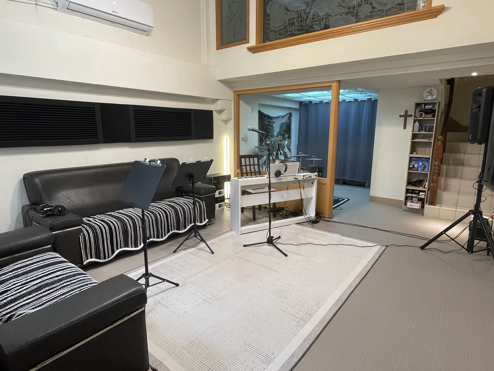
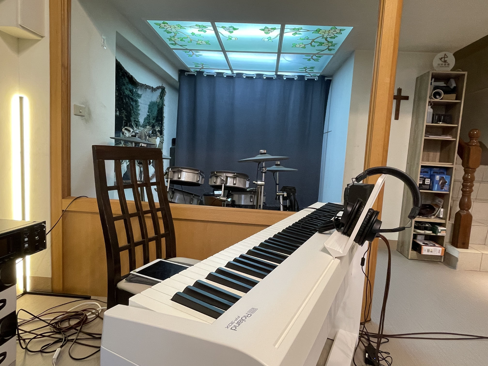
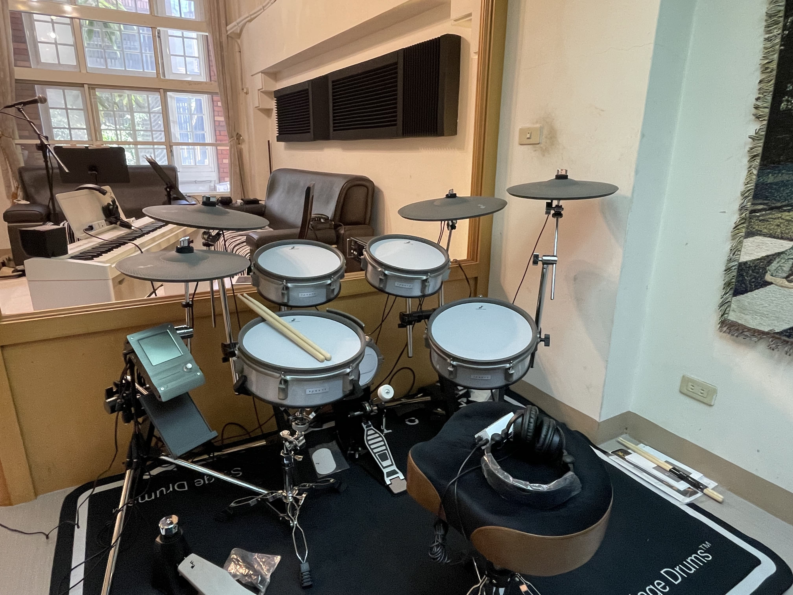
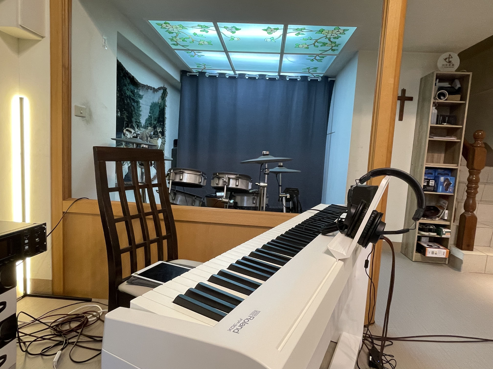
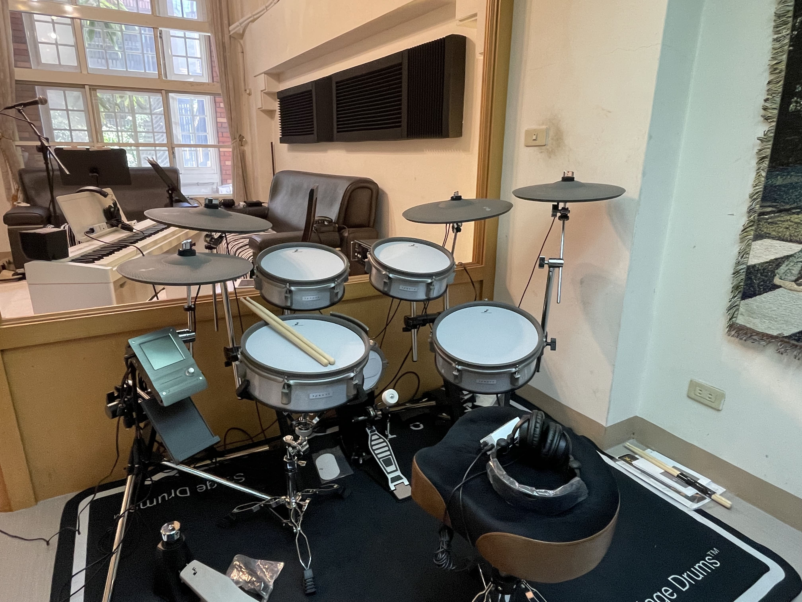
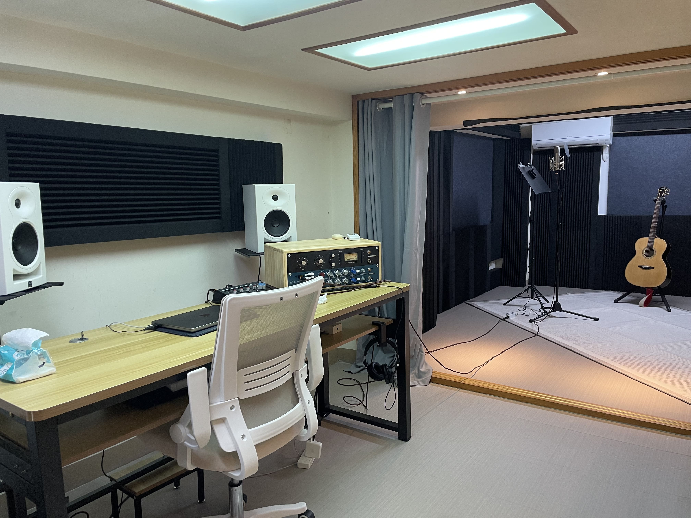
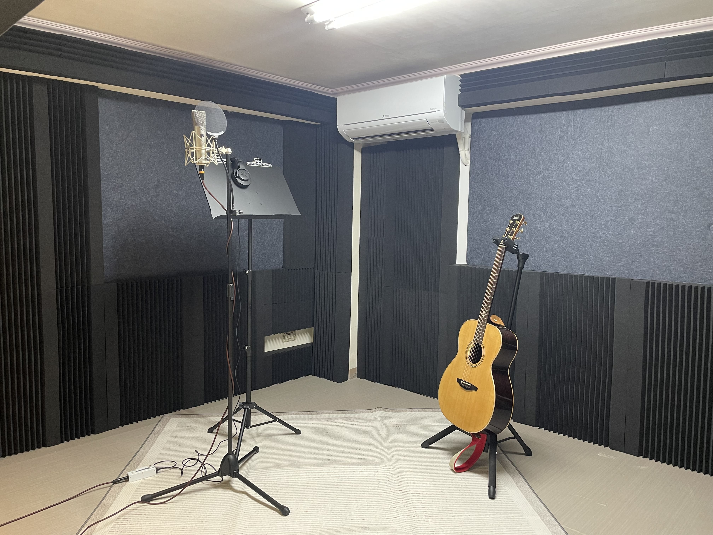

一樓練團室

 



練團室控制系統：Behringer X32rack，搭載 Yamaha Stagepas 600BT LR 兩副 PA 喇叭，高品質主動式 DI100
監聽系統：獨立 IEM 立體聲，每位樂手 URX P2 耳擴及 ATH-M20x 耳罩式監聽
樂器系統：KB：Roland FP-30X ／ E-Drum：Yamaha Efnote 3 Hybrid
二樓錄音室


錄音室硬體：Kali LP6 監聽喇叭、SSL12 錄音介面、1273 Dual Mic Preamp、76-KT Compressor
麥克風：Warm Audio WA87、AKG C214、AT-2035
軟體：Pro Tools、Logic Pro